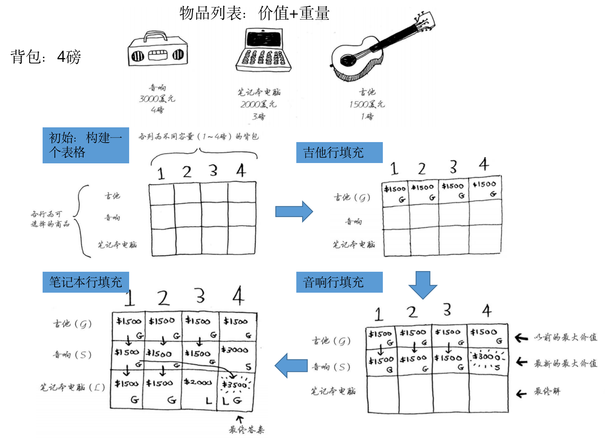

动态规划
什么问题适合用动态规划（最优子结构）
符合最优子结构的问题适合用动态规划
最优子结构 是指一个问题的最优解可以通过其子问题的最优解构造出来。换句话说，问题的最优解依赖于子问题的最优解。
例如要计算年级的最高分，可通过计算每个班级的最高分之后取最值得到
动态规划算法框架
确定状态和选择
明确当前值需要通过哪些子结构通过哪些选择得到，用以确定dp数组是一维还是二维的
例如对于斐波那契数列只要知道前2项即可，所以是一维的
对于零钱兑换问题，如果target=10，则粗略估计需要知道0-9的最小值（列），而且要对于不同零钱选择（行）计算最值（也可用一维的做，但二维从语意上更明确）
定义dp数组
一般定义dp[i][j]为在target=j时做操作i的最优值（对一维来说i即为数组索引）
初始化dp数组
通过刚才定义出的dp数组的语意来初始化第一行/列
【技巧】对于二维dp数组，一般会扩展一行与一列避免边界问题的讨论，需要注意的是在计算值时，状态应为当前索引-1的值，即i-1与j-1
举例推导dp数组
试着手写推导部分值，总结规律，看哪些备选项与选择会出现最值
// 自底向上迭代的动态规划
// 初始化 base case
dp[0][0][...] = base case
// 进行状态转移
for 状态1 in 状态1的所有取值：
for 状态2 in 状态2的所有取值：
for ...
dp[状态1][状态2][...] = 求最值(选择1，选择2...)背包问题
0-1背包问题
题目为每件物品只能拿一次，计算在重量为K的限制下拿取物品的最大价值
dp[i][j]表示在重量限制为j下，可拿物品为0到i-1的最大价值

// weight数组的大小就是物品个数
for(int i = 1; i < weight.size(); i++) { // 遍历物品
for(int j = 0; j <= bagweight; j++) { // 遍历背包容量
if (j < weight[i]) dp[i][j] = dp[i - 1][j]; // 不拿（放不下）
else dp[i][j] = max(dp[i - 1][j], dp[i - 1][j - weight[i]] + value[i]); // max（不拿，拿）
}
}完全背包问题
题目为每件物品拿取次数不限，计算在重量为K的限制下拿取物品的最大价值
dp[i][j]表示在重量限制为j下，可拿物品为0到i-1的最大价值
区别于0-1背包问题，完全背包问题的计算极值时要考虑多次取当前物品的情况，从代码角度来说就是当拿取当前物品时，剩余空间的最大价值不在上一行（不拿当前物品）找，而在当前行（拿当前物品）找
// weight数组的大小就是物品个数
for(int i = 1; i < weight.size(); i++) { // 遍历物品
for(int j = 0; j <= bagweight; j++) { // 遍历背包容量
if (j < weight[i]) dp[i][j] = dp[i - 1][j]; // 不拿（放不下）
else dp[i][j] = max(dp[i - 1][j], dp[i][j - weight[i]] + value[i]); // max（不拿，拿）
}
}子序列问题
最长公共子序列
两个字符串的 公共子序列 是这两个字符串所共同拥有的子序列，子序列不要求连续
输入：text1 = “abcde”, text2 = “apcke” 输出：3 解释：最长公共子序列是 “ace” ，它的长度为 3
dp[i][j]表示在text1为0到i-1,text2为0到j-1下的最长公共子序列
for (int i = 1; i <= text1.size(); i++) {
for (int j = 1; j <= text2.size(); j++) {
if (text1[i - 1] == text2[j - 1])
dp[i][j] = 1 + dp[i - 1][j - 1]; // 相同则两边往前看
else
dp[i][j] = max(dp[i - 1][j], dp[i][j - 1]);// 不同则其中一边往前退一个
}
}打家劫舍问题
不可选相邻元素，求子序列求和的最大值
输入：[1,2,3,1] 输出：4 解释： 偷窃 1 号房屋 (金额 = 1) ，然后偷窃 3 号房屋 (金额 = 3)
偷窃到的最高金额 = 1 + 3 = 4
dp[i]表示在nums为0到i-i时受限子序列的最大值
for (int i=1;i<nums.size();i++)
{
if (i-2<0)
dp[i] = max(dp[i-1],nums[i]);
else
dp[i] = max(dp[i-1],nums[i]+dp[i-2]); // max（不拿，拿）
}细节策略
可复选与单选的区别
单选需要的是不包含当前可选物品时的状态（即上一行的状态）
复选需要的是包含当前可选物品时的状态（即当前行的状态）
具体区别见0-1背包问题和完全背包问题
消除子问题重复计算的方法（备忘录）
一般情况下通过dp数组记录中间值来避免子问题的重复计算
在dp数组不好定义的情况下（例如树形等非线形状态），考虑用哈希表记录
// 337. 打家劫舍 III
unordered_map<TreeNode *,int>umap;
int rob(TreeNode* root) {
//...
// 偷父节点
int val1 = root->val;
if (root->left)
val1 += rob(root->left->left) + rob(root->left->right); // 跳过root->left，相当于不考虑左孩子了
if (root->right)
val1 += rob(root->right->left) + rob(root->right->right); // 跳过root->right，相当于不考虑右孩子了
// 不偷父节点
int val2 = rob(root->left) + rob(root->right); // 考虑root的左右孩子
umap[root] = max(val1, val2); // 记录当前状态
return max(val1, val2);
}